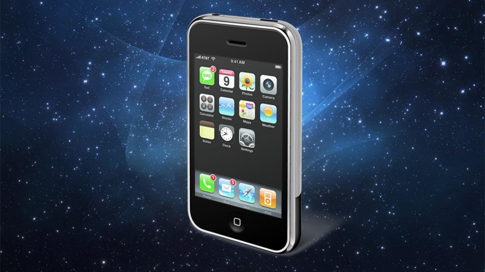
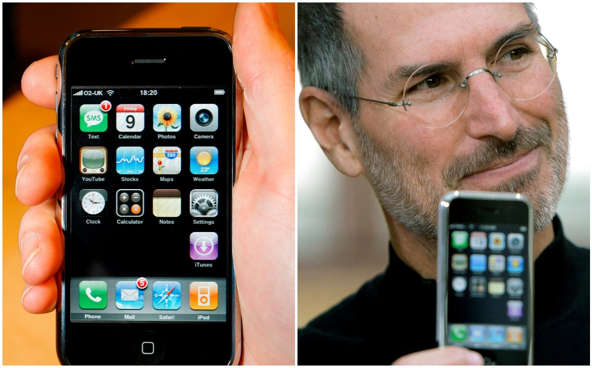

2007: El iPhone de Apple, una revolución
El iPhone de Apple reinventa la telefonía móvil con su pantalla táctil y su interfaz intuitiva. El iPhone introdujo una nueva forma de interactuar con los teléfonos inteligentes, popularizando las aplicaciones y las tiendas de aplicaciones.



- El primer iPhone no tenía una aplicación para enviar mensajes de texto.
- La App Store se lanzó solo seis meses después del lanzamiento del iPhone.
- El iPhone original tenía una capacidad de almacenamiento de 4GB, 8GB o 16GB.
- Rmn, E. (2014, 11 septiembre). iPhone: así es su historia desde el 2007. Xataka México. Referencia